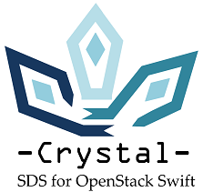

Crystal
Software-Defined Storage (SDS) systems have recently emerged as a mean of simplifying storage management in the cloud. However, the extensibility and programmability capabilities of most SDS systems is limited, given the closed nature of their primitives at the control and data planes. This makes these systems inflexible to meet functionalities non-anticipated in their design.
As an outcome of the IOStack project, we present Crystal: A Software-Defined Storage (SDS) architecture that is open for reflection, meta-programming and extension. Reflection involves introspection of the state of system via customizable inspection hooks, as well as transparent interception for executing arbitrary computations on storage requests. We propose a rich data plane with introspection capabilities and an interception filter framework to easily deploy storage filters. Metaprogramming is achieved in the control plane thanks to programmable policies and a novel meta-language (DSL) that can automate the dynamic modification of the data plane. Finally, the architecture is extensible both at the control plane (DSL, policies) and the data plane (filters, inspection hooks).
As a proof-of-concept, we extended Crystal with: i) Storage management filters and ii) distributed control of IO bandwidth in multi-tenant scenarios. We evaluated Crystal on an enterprise-size cluster using real trace replays and benchmarks. Our results demonstrate that Crystal is an extensible platform to design and deploy new SDS services for object stores, while incurring modest overhead.
For more information, please visit: http://crystal-sds.org
https://github.com/Crystal-SDS
